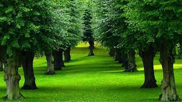
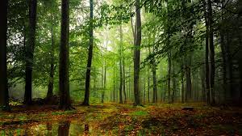
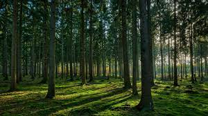
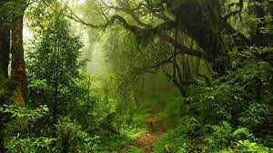

Una pagina informativa con el fin de explicarnos todo lo relacionado con los arboles...
árbol que crece hasta 25 m. de altura, perennifolio, copa redondeada densa, hojas de 14 cm.
La teca se utiliza para hacer muebles para exteriores, barcos, y otras cosas que requieren resistencia.
Es un árbol con múltiples beneficios pues brinda materiales que satisfacen distintas necesidades del ser humano.